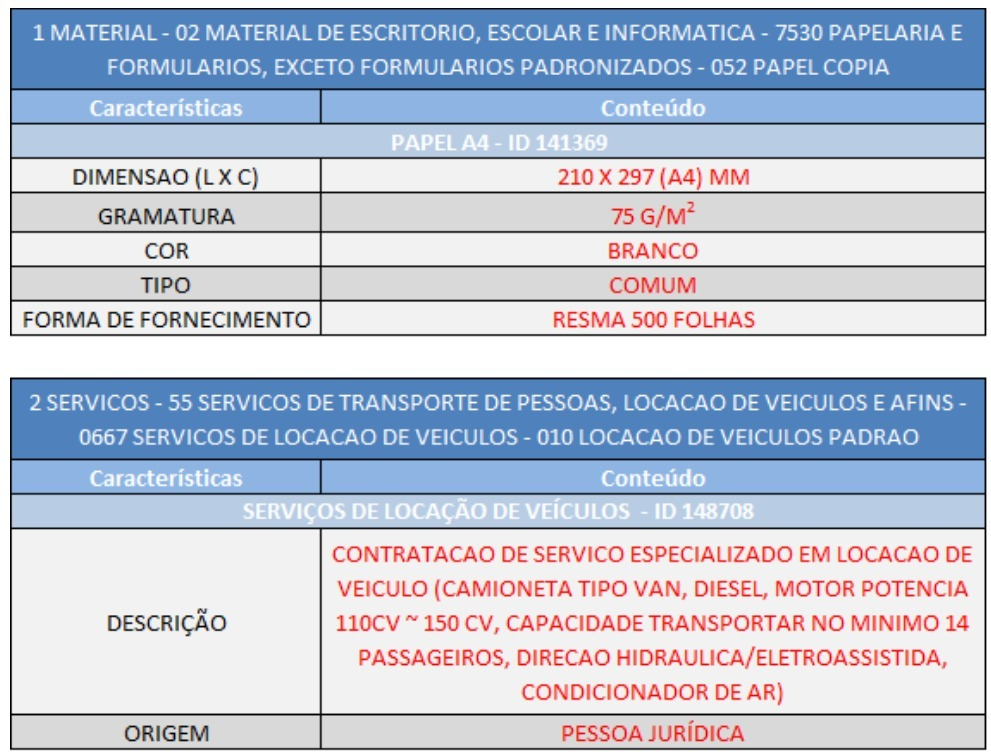
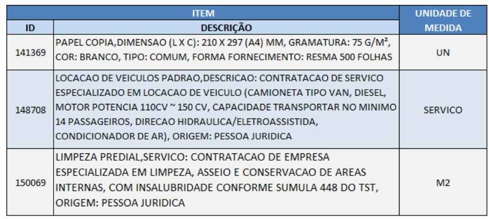
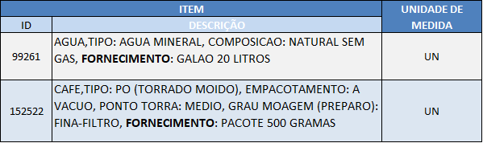

CATÁLOGO DE MATERIAIS E SERVIÇOS
Fase de Planejamento • Base de Conhecimento REDELOG RJ
O Catálogo de Materiais e Serviços é uma ferramenta essencial para a padronização de especificações das características de um material ou serviço a ser contratado, garantindo uniformidade de procedimentos e proporcionando ao mercado fornecedor subsídios para a correta identificação do que a Administração Pública pretende adquirir.
O Decreto nº 47.525, de 17 de março de 2021, institui e regulamenta a Política Estadual de Gestão Estratégica de Suprimentos – PGES e a Política Estadual de Compras Centralizadas no Estado do Rio de Janeiro, tendo como um dos seus instrumentos estruturantes o Catálogo de Materiais e Serviços do Estado do Rio de Janeiro.
O QUE É O CATÁLOGO DE MATERIAIS E SERVIÇOS?
O catálogo é uma base de dados que contém a relação e a descrição de todos os materiais e serviços, permitindo a operacionalização dos processos de compras em atendimento às necessidades dos órgãos e entidades do Estado no que se refere à gestão de suprimentos.
As especificações dos itens de materiais e serviços devem ser precisamente detalhadas e compatíveis com aqueles encontrados no mercado fornecedor para garantir a qualidade das compras públicas estaduais.
- Decreto Estadual nº 46.910/2020 (Regulamenta o SIGA): Art. 2º – O Sistema Integrado de Gestão de Aquisições – SIGA compreende a funcionalidade de I – Catálogo de Materiais e Serviços.
- Decreto Estadual nº 47.525/2021 (Política Estadual de Gestão Estratégica de Suprimentos): Art. 5º – São instrumentos da GES, dentre outros: IV – o Catálogo de Materiais e Serviços utilizado pelo Estado do Rio de Janeiro.
PRINCÍPIOS DA CLASSIFICAÇÃO
Catalogação
Fase do processo em que cada material deverá ser identificado e ordenado logicamente, para facilitar o setor de compras e atingir a clareza necessária para o atendimento do usuário final.
Especificação
Minuciosa descrição do item visando um perfeito entendimento entre consumidor e fornecedor, sem deixar margem a dúvidas ou ambiguidades.
Normalização
Conjunto de normas que estabelecem padrões de qualidade na fabricação dos produtos, visando a segurança, a proteção do consumidor e a eliminação de barreiras técnicas e comerciais.
Codificação
Forma pela qual apresentamos cada item através de um código numérico estruturado, definindo critérios consistentes para sustentação dos sistemas informatizados.
Atributos da Classificação
- Abrangência: A classificação deve abordar uma série completa de características dos materiais e serviços.
- Flexibilidade: Permite interfaces entre diversos tipos de classificação e adaptação dinâmica do sistema às novas demandas.
- Praticidade: Simples e direta, sem demandar do gestor procedimentos complexos, provendo dados objetivos.
Requisitos do Sistema de Classificação
- Expansividade: Suporta o crescimento natural das demandas e da diversidade institucional.
- Unicidade: O código é a chave primária exclusiva do item (um único código para cada item).
- Simplicidade e Concisão: Fácil compreensão, uso e objetividade das informações.
- Operacionalidade e Confiabilidade: Prático no campo e com garantia de qualidade dos dados.
- Padronização: Regras claras e estruturadas na codificação.
ESTRUTURA DO CATÁLOGO NO SIGA
- Tipo: Identificado por numeral (1 para Materiais ou 2 para Serviços).
- Famílias (1º nível hierárquico): Onde estão reunidas as classes afins por natureza e/ou função.
- Classes (2º nível hierárquico): Agrupam materiais ou serviços com a mesma natureza dentro da respectiva família.
- Artigos (3º nível hierárquico): Agrupam itens correlatos e definem características técnicas por meio de PDM ou PDS.
- Itens: Especificação sucinta e inequívoca do material ou serviço (matéria-prima, dimensões, embalagem, etc.).
Padrão de Descrição de Materiais (PDM) e de Serviços (PDS)
1. Características
São as informações indispensáveis para a identificação/especificação técnica inequívoca dos itens de materiais e serviços. De forma simplista, representam as “perguntas” necessárias para especificar e adquirir um produto ou contratar um serviço sem a utilização de referências comerciais.

2. Conteúdos
São os valores pré-definidos e aceitos vinculados a cada característica que compõe determinado Padrão de Descrição (PD). Representam as “respostas” padronizadas para as “perguntas” formuladas pelas características técnicas.
.jpg "Clique para ampliar")
3. Unidade de Medida
A unidade de medida complementa o item e deve ser selecionada conforme o padrão de mercado. Possui como valores as referências do Sistema Internacional de Medidas ou unidades de consumo/aquisição.

4. Forma de Fornecimento
É a forma exata pela qual o produto é comercializado no mercado fornecedor. É com base na forma de fornecimento que o fornecedor formula sua cotação de preços, apresenta propostas e dá lances em pregões.

BENEFÍCIOS DA PADRONIZAÇÃO E BANCO DE PREÇOS
A manutenção de uma base de dados com estruturas padronizadas garante que todas as secretarias e órgãos utilizem uma linguagem única em conformidade com as práticas mercadológicas, aumentando o poder de negociação e obtendo economia em escala.
Alavancas Operacionais
- Evitar licitações desertas, fracassadas ou impugnações por ambiguidade do objeto;
- Redução expressiva de erros no recebimento e conferência de materiais;
- Otimização da gestão de estoques e almoxarifados;
- Racionalização dos itens catalogados e saneamento contínuo da base.
Impacto no Banco de Preços
O desempenho da pesquisa de preços é uma função direta da qualidade da especificação do objeto. Quanto mais precisa a descrição, maior a coerência dos preços de referência apurados pelo Estado, evitando distorções de valores e sobrepreço.
EXISTE DIFERENÇA ENTRE O CATÁLOGO DO SIGA E O CATÁLOGO ELETRÔNICO DE PADRONIZAÇÃO?
Sim. O Catálogo Eletrônico de Padronização está previsto no art. 6º, inciso LI e art. 19, inciso II da Lei nº 14.133/2021 como um sistema informatizado centralizado com indicação de preços. O Decreto Estadual nº 48.816/2023 prevê justificativa quando da não utilização do referido catálogo na fase preparatória.
MANUAL DE PROCEDIMENTOS DO CATÁLOGO DE MATERIAIS E SERVIÇOS
Baixe o manual oficial completo de procedimentos da Subsecretaria de Logística (SUBLOG/SEPLAG-RJ) para orientar a correta catalogação, criação de novos itens, padronização e saneamento no Sistema SIGA.